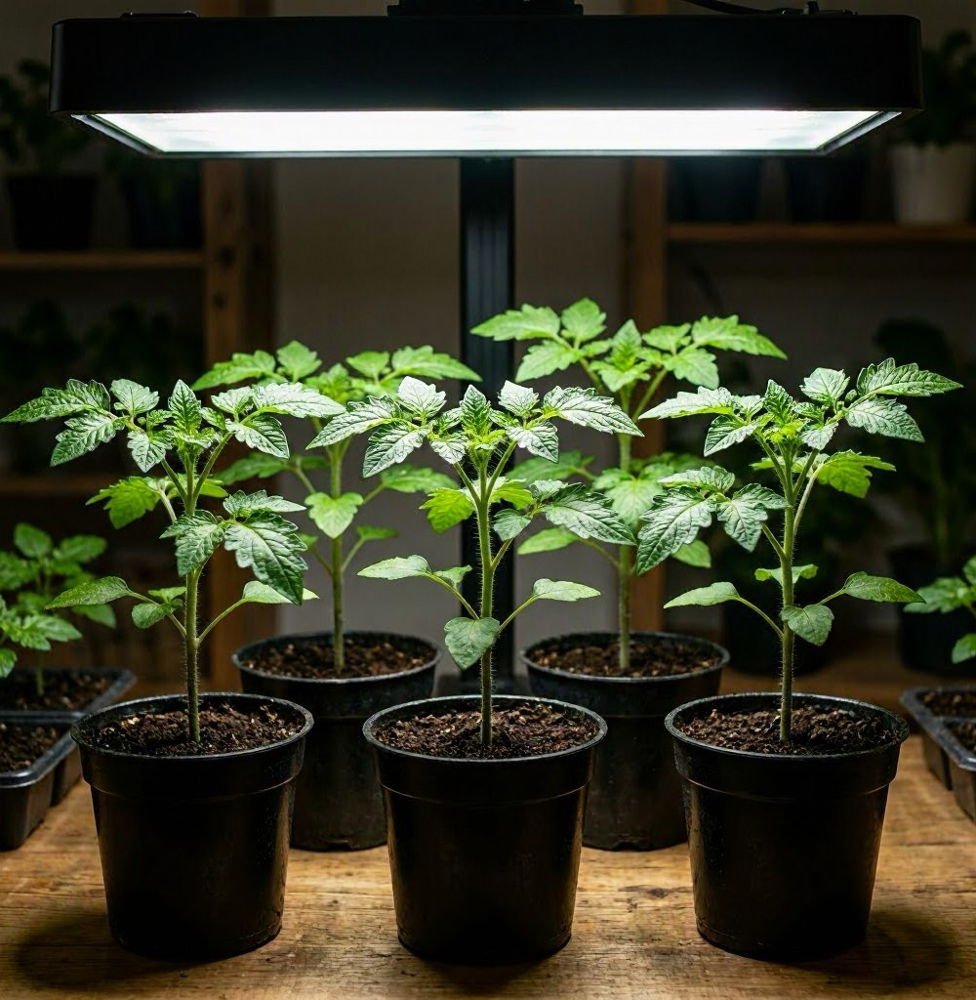

Early Starts
While waiting for move‑in day, the garden begins with tomato starts and herbs...

What I Can Do Before Closing
- Seed inventory and variety selection
- Tool and canning equipment check
- Soil and microclimate research
- Garden layout sketches
- Budget planning
- Pantry organization ideas
Organic Philosophy
Emberroot Haven will be organic from the ground up...
First‑Year Priorities
- Build 2–4 raised beds
- Install simple trellises
- Set up temporary deer protection
- Start a compost system
- Plant perennial herbs